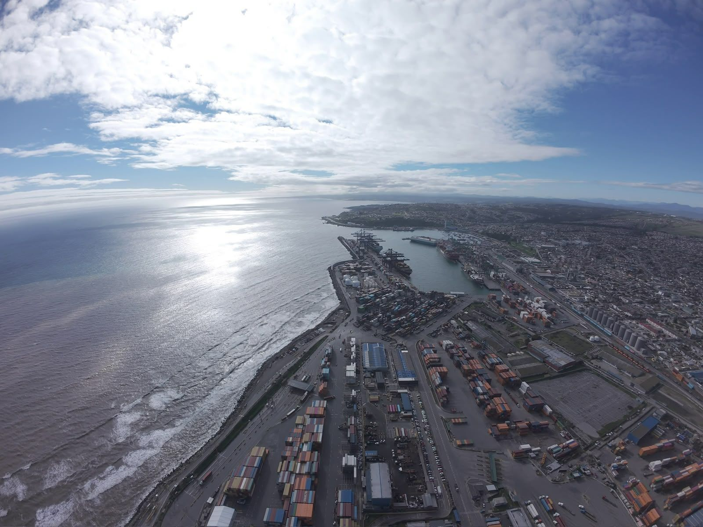

San Antonio, Región de Valparaíso
El crecimiento portuario y el ecosistema costero
El Puerto Exterior de San Antonio
Vista aérea del puerto de San Antonio.
Una de las principales apuestas de infraestructura y a favor del comercio exterior es la expansión del sistema portuario de San Antonio, el puerto fundamental del país, ubicado en la Región de Valparaíso.
La iniciativa, impulsada por la Empresa Portuaria San Antonio, busca aumentar la capacidad de transferencia de carga mediante la construcción de dos nuevos terminales portuarios. Este proyecto contempla alcanzar una capacidad de hasta seis millones de TEU anuales, equivalente casi a un contenedor de veinte pies.
Al aumentar la capacidad de recepción de naves y carga, San Antonio tendría la oportunidad de consolidarse como uno de los principales puertos del Pacífico Sur. Tras varios años de tramitación, la iniciativa obtuvo una aprobación ambiental en mayo de 2026, con compromisos tales como la descarbonización portuaria, el uso de maquinaria eléctrica y traslado de la carga por ferrocarril.
Desde esta perspectiva, el proyecto contribuye a la competitividad económica, a la generación de empleos y a la actividad local. Sin embargo, la magnitud del proyecto obliga a examinar sus consecuencias sobre la biodiversidad del sector.
Uno de los puntos centrales de la controversia gira en torno al Humedal Ojos de Mar, también conocido como Lagunas de Llolleo. Este humedal pertenece a la cuenca del Río Maipo, y está conformado por dos lagunas mayores, de 6,78 y 6,40 hectáreas, respectivamente, y una laguna menor de 1,36 hectáreas, cubriendo una superficie de 18,38 ha en total, que es equivalente a un mall con estacionamientos.
190 ha
18,38 ha
Este espacio posee un valor ecológico y social para el territorio, y es el motivo por el que ha encendido las alarmas en las organizaciones ambientales y habitantes de la zona. Una de estas comunidades es la agrupación Ojos de Mar, principal actor vinculado al conflicto socioambiental registrado en torno al proyecto.
En abril del 2024, el humedal Ojos de Mar fue reconocido por el Ministerio del Medio Ambiente, lo que obligó al proyecto a modificarse con tal de proteger el mismo, y a diferencia de los diseños iniciales, no podría rellenar o destruir los cuerpos de agua.
Es por ello que la empresa EPSA debió tomar diversas medidas de mitigación, desde la instalación de un buffer para mitigar el polígono alrededor del humedal, barreras perimetrales, aislamiento acústico e infraestructuras que ayuden a conservar la zona.
Pese a esto, especialistas de la Universidad de Chile aclararon lo vulnerables que son estos sistemas, y como la serie de amenazas son producidas por la actividad humana, incluso con alteraciones como cambios en el nivel del agua, drenaje, ruido, vibraciones y las alteraciones químicas en la calidad del aire, atmósfera y suelo también son amenazas significativas que impactan de manera significativa estos ecosistemas que son considerados delicados.
Liliana Cancino, una de las fundadoras de esta organización, lo describió como “la muerte y la destrucción total del ecosistema”.
“Este proyecto pretende desaparecer toda la costa de San Antonio hasta la desembocadura del Río Maipo. Este proyecto, que ya está en el centro de la ciudad, ya avanzó desde San Antonio a otro sector que se llama Barrancas, y ahora quiere invadir nuestro sector que es Llolleo”, explica Liliana.
“Los pilpilenes, los zarapitos, los chorlos de collar, los cisnes y los playeros blancos llegan por miles todos los años a la playa de Llolleo, se alimentan de ella. Y este proyecto nos quiere dejar sin la orilla del mar. Más grúas, trenes, camiones... Va a cambiar el clima del lugar, va a calentar el agua.
No los van a matar el primer día, los van a condenar a cadena perpetua encerrados dentro de un puerto”
Liliana Cancino, agrupación Ojos de Mar
Asimismo, al tocar el tema sobre las aves migratorias, hablamos con Diego Luna Quevedo, especialista en política y gobernanza en la organización de conservación Manomet Conservation Sciences, quien nos trasladó a la realidad de lo que significan las aves playeras y su papel en la biodiversidad del territorio.
“Estamos hablando de indicadores biológicos muy importantes, que dan cuenta de la salud del ambiente, ecosistemas o incluso del medio ambiente humano, donde vivimos y nos desarrollamos”, explica. “Si un sitio va perdiendo aves playeras, va a decir que la calidad ambiental o la salud de estos ambientes está siendo afectada”.
“Creo que perder a las aves podría significar que hemos cruzado un umbral de degradación de no retorno. Y eso nos pone en riesgo también a nosotros.”
Diego Luna Quevedo, Manomet Conservation Sciences
El caso expone un dilema de las zonas portuarias, porque si bien la expansión significa empleo, inversión y mayor competitividad, las transformaciones también son irreversibles en un territorio donde confluyen la pesca artesanal, el turismo y la biodiversidad. No se limita solamente a si debe crecer, sino bajo qué condiciones y cuáles son las garantías de protección.